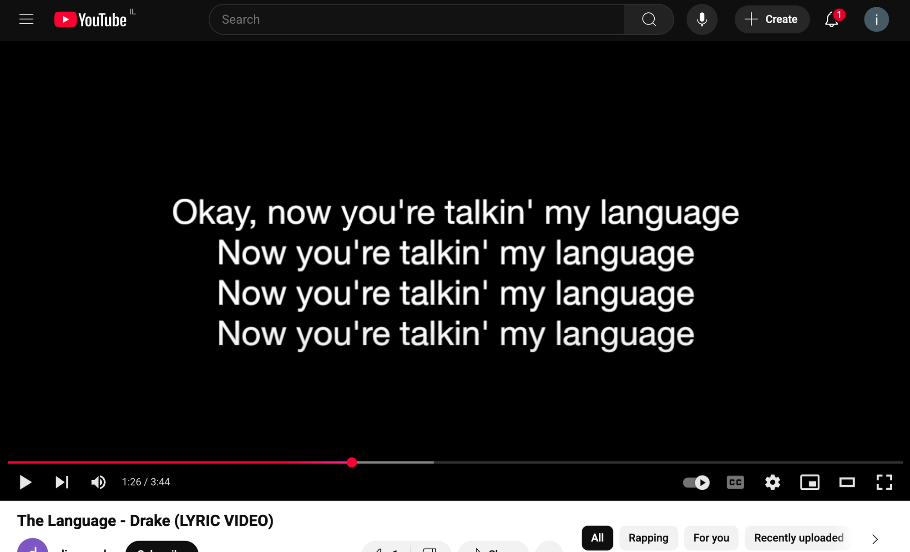

An LLM idiom is a pattern or format that models tend to recognize implicitly — conventions their training has reinforced and their internal representations can use without extra explanation. These are the native languages of AI systems.
To me, this is one of the most important concepts in prompt engineering.
I don't think there's a technical word for this concept yet, so I'll just be calling these language devices: LLM Idioms.
Take JSON Prompting as an example. JSON is an idiom models deeply understand from their training data, and using it introduces assumptions and bias into a response.
If you reference "spaghetti and meatballs", it might make a human think to their mother's cooking rather than the pure definition of the word. Same thing happens for models when you talk in Markdown.
You want to speak in the language an LLM understands. There are certain things that exist in its world that it understands implicitly without having to re-explain or re-describe them.

More simply, they're things like:
< and > signs indicate different sections of text. Use that idiom, and the model gets it's a different section.Chat formats - User messages, assistant messages, system messages. If you recall the early days of GPT, we started with completion models not chat. Messages are an abstraction that model providers built. At this point, LLMs are trained so much on it that they understand this message dynamic deeply.
### System
You are ChatGPT, a large-language model trained by OpenAI.
Speak concisely and use clear, step-by-step reasoning when helpful.
If the user asks for code, return only code inside one fenced block.
### User
Write a haiku about sunrise that mentions the ocean.
### Assistant
A golden path spreads
over still, murmuring waves—
dawn rinses the sky.
### User
Great—please translate that haiku into French.
### AssistantThe abstraction of chat models can be thought of as this simple completion-style prompt.
Context-switching is hard for humans. It's hard for models too.
When you prompt with JSON and expect creative writing, that's a context switch. Probabilistic pathways make this a harder task. Similarly, there have been studies showing that code generation returned inside a JSON structure isn't quite as good as just raw code output.
Why? Because of how training data works and how these models are trained. The response exists in a slightly different space in the vector embedding coordinates.
A model outputting JSON is thinking using different paths than a model writing creatively.
For example:
note"These are vastly different. You can think of the first example as thinking like a computer, and the second as drawing from more literary data.
JSON puts the model in "I'm reading/outputting code" mode. Not always what you want.
If your goal is creativity, chaos, or surprise - like dream journaling, storytelling for kids, or idea generation without constraints - skip the JSON. JSON equals structure. Freeform equals chaos.
But just like with programming languages - Python might be slower to compile than C, but it's quicker for developers to write. In a world where compute is cheap and developer hours are expensive, that matters. Same thing is true for prompt engineering hours. If JSON prompting can make your codebase/"promptbase " cleaner, it might be worth it.
LLM idioms - whether XML, Markdown, JSON, or chat formats - are tools in your toolbox.
I actually use both XML and Markdown when I prompt. Many models are trained on both. Claude is famously good at XML. I often use Markdown for sections and for "human readability" and XML to denote "attachments".
While structured output has a lot of the context-related drawbacks, for building reliable systems, it can be invaluable. We built an AI prompt writer internally at PromptLayer, but had trouble because our structured output schema was so complicated that models would fail or timeout. We had success breaking it up into multiple prompts - one would write all the messages in plain text, then another would put them into structured output. This way, our prompt writer was not needlessly constrained by the idiom of structure.
Speak to LLMs in ways they understand.